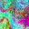

Benchmark / Lossless / clay-embeddings / clay-embeddings-09
clay-embeddings-09
sahara · 2024-06-02 · sample details

Metadata
| id | clay-embeddings-09 |
|---|---|
| source |
|
| asset | https://data.source.coop/clay/lgnd-clay-v1-5-sentinel-2-l2a/aggregated/geohash_l2=sh/year=2024/month=06/data_01c1fab1-0004-5b1c-0009-b72e01d3104e_022_0_0.parquet |
| crs | EPSG:4326 |
| transform | 1.603280079 0.025374916474609373 0.0 25.385794584 0.0 -0.022994379156250022 |
| datetime_start | 2024-06-02T10:43:58Z |
| datetime_end | 2024-06-29T10:34:15Z |
| bands | E0000 to E1023, 1024 planes |
| shape | 1024x32x32 |
| dtype | float32 |
| unit | embedding |
| scale | 1 |
| offset | 0 |
| input_sha256 | 6c2f0c4cd7640c2aeb3f3fc6c476abb6d780d3c9f7b348eeba8f611a8029c706 |
| site | sahara |
| regime | bare |
| lon | 2.004 |
| lat | 25.003 |
| centre_lon | 2.004 |
| centre_lat | 25.003 |
| cells_path | cells/clay-embeddings-09.csv |